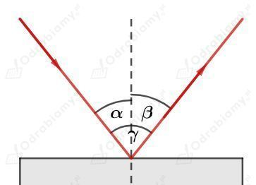

a) Powstaje fala kolista. Na wodzie obserwujemy rozchodzące się okręgi, których środki znajdują się w miejscu, w którym uderzamy palcem w powierzchnię wody. Rozchodzące się fale nie są idealnymi okręgami, a ich środki mogą być przesunięte względem siebie, ponieważ nasz palec może nie uderzać idealnie w to samo miejsce na wodzie.
b) Powstaje fala płaska. Na wodzie obserwujemy rozchodzące się zaburzenia w postaci biegnących linii prostych. Rozchodzące się fale są w przybliżeniu falą płaską, ponieważ w zależności od kąta ustawienia linijki poszczególne grzbiety fali mogą nie być do siebie idealnie równoległe. Dodatkowo linijka wytworzy falę płaską, której szerokość będzie równa długości linijki. Na krawędziach linijki i przy ściankach naczynia fale będą się uginać.
c) Powstaje fala kulista. Wokół płomienia zapałki światło rozchodzi się promieniści w każdym kierunku. Wyobrażenie rozchodzących się fal jako powierzchni sfer jest jednak tylko przybliżeniem, ponieważ światło z płomienia nie jest idealnie izotropowe i może rozchodzić się w danym kierunku z różnym natężeniem w zależności od położenia płomienia, jego wahań i jasności.
d) Powstaje fala płaska. Światło z reflektora jest w przybliżeniu równoległą wiązką światła. Im dalej od reflektora znajdujemy się tym wiązka światła jest bardziej rozbieżna i ma stożkowy kształt, a jej czoło jest fragmentem powierzchni sfery.
Maszt nadaje fale radiowe długie i jego wysokość odpowiada połowie długości emitowanej fali.
Wyznaczmy długość fali radiowej:
Fale radiowe to fale elektromagnetyczne, więc ich prędkość jest równa prędkości światła:
Wyznaczmy częstotliwość nadawanych fal radiowych:
Sporządzamy rysunek do zadania:

Kąt pomiędzy promieniem padającym i odbitym wynosi:
Zgodnie z prawem odbicia kąt odbicia jest równy kątowi padania :
Stąd:
Ka padania i odbicia wynoszą 30°.
Echosonda i radar działają na tej samej zasadzie. Oba urządzenia wysyłają fale w przestrzeń powietrzną lub wodną. Kiedy fale ulegną odbiciu od przeszkody i wrócą do ich źródła, komputer jest wstanie obliczyć odległość pomiędzy urządzeniem a przeszkodą, ponieważ wie z jaką prędkością rozchodzą się fale w danym ośrodku.
Różnica polega na tym, że radar wysyła fale elektromagnetyczne (radiowe), a echosonda fale mechaniczne (dźwiękowe).
Źródła:
pl.wikipedia.org/wiki/Echosonda
pl.wikipedia.org/wiki/Radar
Kiedy przykładamy ucho do rurki słyszymy głośniejszy dźwięk niż bez niej. Dzieje się tak, ponieważ rurka skupia fale dźwiękowe na małym obszarze, gdzie bez niej fale rozchodzą się kuliście wokół głośnika i ich natężenie szybko maleje.